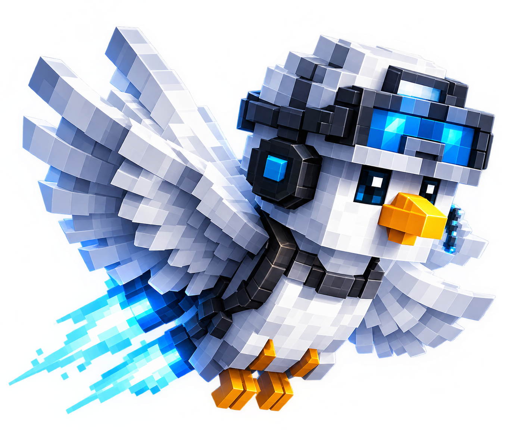

BİZİ TANI
Astro Craft
hakkında.
Astro Craft, arkadaşlarınla vakit geçirmek, yeni maceralar yaşamak ve güzel anılar biriktirmek için hazırlanan bir Minecraft sunucusu projesidir.
Kendi dünyamızı birlikte oluşturmayı ve unutulmaz bir topluluk kurmayı hedefliyoruz. Sunucu açılış tarihi ve adresi yakında açıklanacak.
Discord topluluğuna katıl